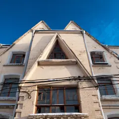
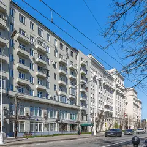

Подборка редакции · Москва
Кофейни, книжные и бары из ленты
Маленькие места, куда приходят ради света и интерьера: кофе под сводами колокольни, книжный с кофейней, особняк с лестницей-волной, бары с красивой стойкой. Не сети и не туристические точки.
- 12 мест
Что в подборке 12
Пятницкая ул., 4/2, стр. 9
Новое
Кофе и выпечка под высокими сводами светло-зелёной колокольни XVIII века у храма Иоанна Предтечи под Бором. В тёплые дни столики стоят во дворике храма.
Подробнее и маршрут: ПерезвонПозвать сюда: Перезвон
Фото здания: Dmitry Ivanov., CC BY-SA 4.0 · Wikimedia Commons

ул. Садовая-Сухаревская, 10/12
Новое
Кофейня делит первый этаж с книжным петербургского издательства «Поляндрия»: полки с иллюстрированными детскими и взрослыми книгами, которые можно листать за чашкой.
Подробнее и маршрут: Поляндрия • LettersПозвать сюда: Поляндрия • Letters
Фото здания: User:NVO, CC BY-SA 3.0 · Wikimedia Commons
Большой Афанасьевский пер., 15, стр. 9
Новое
Музей скульптора в старых домах у Арбата: два внутренних дворика и сад, где бронза стоит среди кирпичных стен и арок, плюс подземные залы. Лучше в солнечный день.
Подробнее и маршрут: Дом БургановаПозвать сюда: Дом Бурганова
Фото: Apr1, CC BY-SA 4.0 · Wikimedia Commons
ул. Малая Никитская, 6/2
Шедевр модерна Шехтеля с лестницей-волной; внутри — музей Горького.
Подробнее и маршрут: Особняк РябушинскогоПозвать сюда: Особняк Рябушинского
Фото: shakko, CC BY-SA 3.0 · Wikimedia Commons
Мантулинская ул., 5, стр. 11, парк «Красная Пресня»
Кофейня в павильоне-водокачке «Октагон» — последнем уцелевшем здании усадьбы Студенец в парке «Красная Пресня».
Подробнее и маршрут: Mátes в «Октагоне»Позвать сюда: Mátes в «Октагоне»
Светлогорский пр., 13, стр. 7
Новое
Кофейня-лофт в парке усадьбы Братцево: мягкие диваны, книги, завтраки и веранда, по вечерам тематические встречи. Сначала гуляем по старому парку над Сходней. 9–22.

Чистопрудный бул., 12, корп. 4
Угловое кафе с подшивками старых журналов, сидром и паштел-де-ната. 9–22.
Подробнее и маршрут: Kiosk 1936Позвать сюда: Kiosk 1936
Фото здания: Mike1979 Russia, CC BY-SA 3.0 · Wikimedia Commons
Яузская ул., 1/15, стр. 1
Петербургская галерея открыла в усадьбе Филипповых книжный об искусстве, кино и архитектуре, кабинет графики и кофейню. Есть каталоги зарубежных музеев и винил.
Подробнее и маршрут: KGallery BookcafeПозвать сюда: KGallery Bookcafe
Фото: Никонико962, CC BY-SA 4.0 · Wikimedia Commons
Старомонетный пер., 12
Галерея, флористическая мастерская и ботанический книжный у Третьяковки: можно собрать свой букет с флористом. 12–20.
ул. Зорге, 9, корп. 1
Кафе и мастерская современной флористики у Полежаевской.
ул. Петровка, 30/7, фиолетовая дверь с глазом
Бар, названный в честь королевы вуду из Нового Орлеана: вход через фиолетовую дверь с нарисованным глазом, во дворе бывают ужины-путешествия.
Тверской бул., 14, стр. 3
Премиальный бар бренда Enfants Riches Déprimés с редкими книгами и винилом. 12–00.
Подробнее и маршрут: Anti Public LibraryПозвать сюда: Anti Public Library


Как позвать
- Выбери план, место или событие — в карточке адрес, цены и маршрут в Яндекс Картах.
- Нажми «Позвать сюда» — соберётся приглашение-игра для свидания или голосование для компании.
- Отправь ссылку в любой мессенджер: тебе ответят, а компания отметит, куда и когда может. Бесплатно и без регистрации.